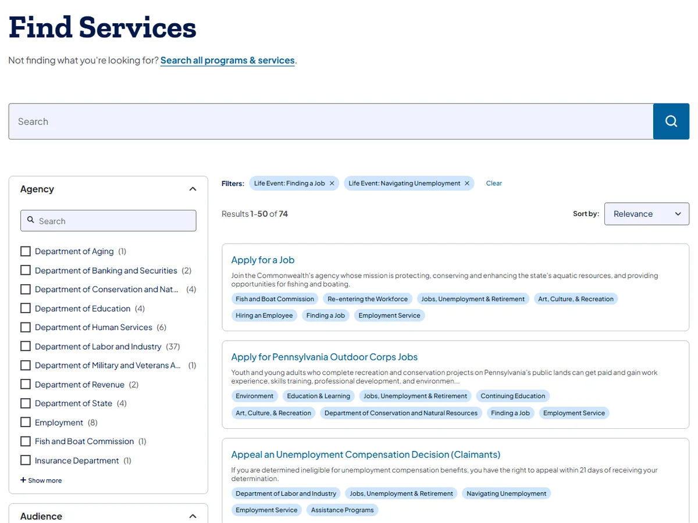
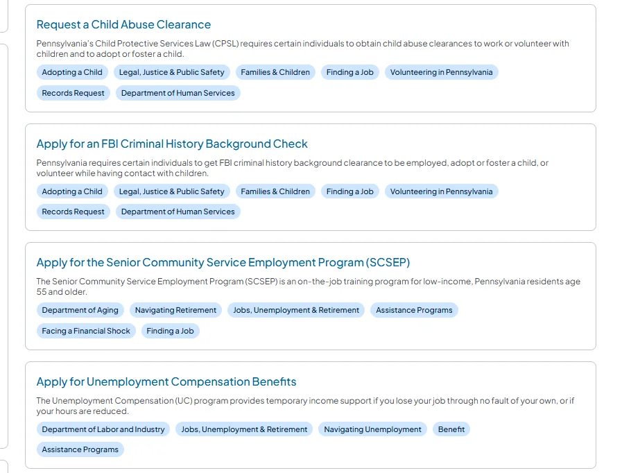

Associate Creative Director, Experience; previously UX Lead
Experience strategy and design for enterprise clients in government, retail, and industrial B2B. Managed designers at every level, including reviews and hiring, and led cross-discipline teams of up to ten.
2010–2014
Amplifi Commerce
UX Lead & Experience Architect
UX strategy and design for retail commerce, for brands including Express, Michael Kors, Movado, and Rooms To Go.
Earlier
Nokia, Handango
Selected work
Public sector · Commonwealth of Pennsylvania2023–2024
PA.gov
Sixty-two state sites now share one structure and one search. Agencies could have opted out, and all but a handful didn't.
Residents had to know which agency owned their task before they could find it, the opposite of the governor's "No wrong door" commitment.
Associate Creative Director, Experience · Publicis Sapient
0:00 / 2:51
A three-minute walkthrough in my own words.


Early research, the site structure, and screens from the live site.
My part
I owned the UX architecture, led four designers, and set direction for the visual design lead, working directly with the governor's digital team. In workshops with each agency, I reorganized their sites around how residents look for content. I also set the content strategy, replacing folders with tags so search could filter the way residents think.
What happened
We first planned to organize around life events, but no one on the client side would own that content. So we simplified the recommendations and put the effort into examples and guidance agencies could follow on their own. PA.gov launched in phases on that architecture, completing in January 2025.
62 sites
43 agencies
37% → 95% accessibility audit score
~9M visits in December 2024
Outcome figures are for the full program.
Retail & banking · Design operations14 months
Grupo Coppel
The hiring criteria I wrote shaped Coppel's senior design hires, and the principles I led are still in its design system.
Coppel's leadership wanted design work on par with the best tech companies, and set up a Digital Center of Excellence to get there. I joined as a founding member.
Associate Creative Director, Experience · Publicis Sapient
Diagrams of the engagement, redrawn without client material.
My part
I ran a skills-gap assessment against that bar, then rewrote most of the design organization's job descriptions around quality and mentoring, with clear criteria for hiring and promotion. I also found that no one owned the journey across six phase-based pods, and led an operating-model proposal to fix it.
What happened
The new job descriptions were broadly agreed on, and I sat on the panel that hired senior managers against my criteria. Coppel's design system credits me for leading its principles. Leadership accepted the structural finding, but the reorganization was deferred behind a CEO-led redesign.
35-person design org
Offered a direct role
Industrial B2B · New product · AI6 months
Visualization tool
Contractors needed to show homeowners how real roofing and siding would look on their house, then turn that choice straight into an order.
Associate Creative Director, Experience · Publicis Sapient
0:00 / 0:40
The end-to-end flow, rebuilt with a fictional brand.
My part
I led up to three designers from first research to final sprint, designing the full flow from project setup through homeowner approval to the order. The team committed early to real-time rendering, which never looked convincing, and contractor research showed quality mattered more than speed. I brought in Figma Make prototyping to make the case for generative-AI rendering, and it took a day or two off each sprint review.
The lesson
I let that direction stay open too long. By the time the research and prototypes reached the client's decision-maker, much of the real-time build was done. The client held course, and the team added an AI render on top to recover quality. Next time I'll test the riskiest assumptions before the build commits.
More projects
Hubbell
Unified more than 30 subsidiary brand sites under a shared component set and taxonomy, through workshops with 30+ stakeholders including senior VPs. It laid the groundwork for the One Hubbell site, which kept each brand's identity.
Aviall, a Boeing company
UX lead on the launch that moved parts distribution to direct online commerce. I owned the IA, wireframes, and prototypes for a catalog of more than two million items.
Nuveen
Hands-on design of a banker-facing workflow for onboarding clients into new financial products, along with the review-and-approval flow for the internal teams behind it.
Ram Tool
Took over client conversations when the project stalled, and guided the internal team, product included, to frame the work around users, data, and outcomes. We were back on track quickly and delivered on time, and the client invited me back for innovation work.
Handango
Designed device selection for a mobile software marketplace, so buyers saw only software their phone could run. It tripled conversion and cut returns 60%.
Clients
B2B & industrial 6
ABC Supply, Hubbell, Aviall (a Boeing company), Oregon Tool, Ram Tool, United Technologies
Retail & ecommerce 14
Home Depot, JCPenney, Grupo Coppel, GameStop, Barnes & Noble, Lululemon, Express, Rooms To Go, Kate Spade, Michael Kors, Movado, Big 5 Sporting Goods, Haglöfs, Hanky Panky
Consumer brands 3
Johnson & Johnson, Altria, Amway
Financial services 2
MUFG Union Bank, Nuveen
Automotive 4
Ford, Firestone, Discount Tire, Polaris
Technology & telecom 4
Intel, Verizon, Nokia, Monster Worldwide
Public sector 1
Commonwealth of Pennsylvania
Capabilities
Leadership · Design practice · Product · AI · ToolsShow allHide
Information architecture: taxonomy, content governance
Journey and service design
Directing user research and usability testing
Heuristic evaluation: 32 clients, 12 industries
Prototyping: testable, right fidelity
Accessibility: WCAG
Product
Product strategy: business cases
Discovery and validation
Measurement: UX metrics, KPIs
AI
AI prototyping: hours, not weeks
AI-accelerated documentation
Designing for generative AI
Tools
Figma · Figma Make · Axure · Claude Code · Gemini · Copilot
AI in my process
I use AI where it shortens the distance between an idea and something people can react to. The judgment calls still sit with me and the team.
01
Prototyping and catalog analysis
On the visualization tool, Figma Make prototypes made the case for generative-AI rendering. We also used AI to find what the client's product catalog was missing for homeowners, and some of those gaps were filled.
02
Documentation at scale
At Coppel, I used LLMs for much of the documentation and for rewriting the design organization's job descriptions. I set the criteria and did the final edits.
03
Knowing when to set it aside
On PA.gov, I tried LLMs on parts of the information architecture. At the time they invented too much and drifted from the direction I gave them, so I set them aside and did that work without them.
I also designed and built this site with Claude Code, along with a private review mode and weekly analytics.
How I work
Build shared ground before arguing structure
People who disagree about structure usually disagree about who they're serving. I get agreement on that first, then let the group reach the structure together.
Earn adoption instead of requiring it
Some of my most lasting work had no mandate behind it. I bring product and engineering in early, so a proposal reaches leadership with their support already behind it.
Make it testable
I put real designs in front of people before a team commits, while risky assumptions are still cheap to change.
Let's talk.
I'm looking for a Director, Head of UX, or Senior Design Manager role, and I'm happy to walk through any of this work in more depth.